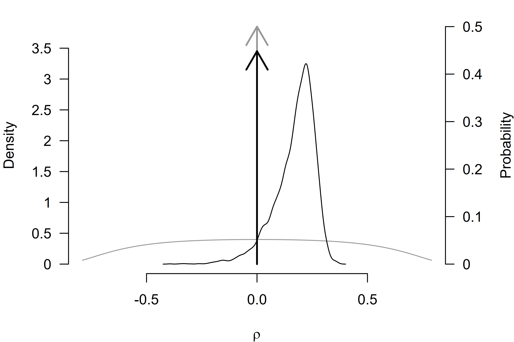

Tutorial: Adjusting for Publication Bias in JASP and R - Selection Models, PET-PEESE, and Robust Bayesian Meta-Analysis
František Bartoš, Maximilian Maier, Daniel S. Quintana & Eric-Jan Wagenmakers
2022
Source:vignettes/Tutorial.Rmd
Tutorial.RmdThis R markdown file accompanies the tutorial Adjusting for publication bias in JASP and R: Selection models, PET-PEESE, and robust Bayesian meta-analysis published in Advances in Methods and Practices in Psychological Science (Bartoš et al., 2022).
The following R-markdown file illustrates how to:
- Load a CSV file into R,
- Transform effect sizes,
- Perform a random effect meta-analysis,
- Adjust for publication bias with:
- PET-PEESE (Stanley, 2017; Stanley & Doucouliagos, 2014),
- Selection models (Iyengar & Greenhouse, 1988; Vevea & Hedges, 1995),
- Robust Bayesian meta-analysis (RoBMA) (Bartoš et al., 2023; Maier et al., 2023).
See the full paper for additional details regarding the data set, methods, and interpretation.
Set-up
Before we start, we need to install JAGS (which is
needed for installation of the RoBMA package) and the R
packages that we use in the analysis. Specifically the
RoBMA, weightr, and metafor R
packages.
JAGS can be downloaded from the JAGS website.
Subsequently, we install the R packages with the
install.packages() function.
{r install.packages(c("RoBMA", "weightr", "metafor")) If
you happen to use the new M1 Mac machines with Apple silicon, see this
blogpost outlining how to install JAGS on M1. In short, you will
have to install Intel version of R (Intel/x86-64) from CRAN, not the Arm64
(Apple silicon) version. Note that there might have been some changes in
the installation process since the blogpost was written and there might
be a JAGS version compatible with Apple silicon available now.
Once all of the packages are installed, we can load them into the
workspace with the library() function.
Lui (2015)
Lui (2015) studied how the acculturation mismatch (AM) that is the result of the contrast between the collectivist cultures of Asian and Latin immigrant groups and the individualist culture in the United States correlates with intergenerational cultural conflict (ICC). Lui (2015) meta-analyzed 18 independent studies correlating AM with ICC. A standard reanalysis indicates a significant effect of AM on increased ICC, r = 0.250, p < .001.
Data manipulation
First, we load the Lui2015.csv file into R with the
read.csv() function and inspect the first six data entries
with the head() function (the data set is also included in
the package and can be accessed via the
data("Lui2015", package = "RoBMA") call).
df <- read.csv(file = "Lui2015.csv")
head(df)
#> r n study
#> 1 0.21 115 Ahn, Kim, & Park (2008)
#> 2 0.29 283 Basanez et al. (2013)
#> 3 0.22 80 Bounkeua (2007)
#> 4 0.26 109 Hajizadeh (2009)
#> 5 0.23 61 Hamid (2007)
#> 6 0.54 107 Hwang & Wood (2009a)We see that the data set contains three columns. The first column
called r contains the effect sizes coded as correlation
coefficients, the second column called n contains the
sample sizes, and the third column called study contains
names of the individual studies.
We can access the individual variables using the data set name and
the dollar ($) sign followed by the name of the column. For
example, we can print all of the effect sizes with the df$r
command.
df$r
#> [1] 0.21 0.29 0.22 0.26 0.23 0.54 0.56 0.29 0.26 0.02 -0.06 0.38
#> [13] 0.25 0.08 0.17 0.33 0.36 0.13The printed output shows that the data set contains mostly positive effect sizes with the largest correlation coefficient r = 0.54.
Effect size transformations
Before we start analyzing the data, we transform the effect sizes from correlation coefficients to Fisher’s z. Correlation coefficients are not well suited for meta-analysis because (1) they are bounded to a range (-1, 1) with non-linear increases near the boundaries and (2) the standard error of the correlation coefficients is related to the effect size. Fisher’s z transformation mitigates both issues. It unwinds the (-1, 1) range to (, ), makes the sampling distribution approximately normal, and breaks the dependency between standard errors and effect sizes.
To apply the transformation, we use the combine_data()
function from the RoBMA package. We pass the correlation
coefficients into the r argument, the sample sizes to the
n argument, and set the transformation
argument to "fishers_z" (the study_names
argument is optional). The function combine_data() then
saves the transformed effect size estimates into a data frame called
dfz, where the y column corresponds to
Fisher’s z transformation of the correlation coefficient and
se column corresponds to the standard error of Fisher’s
z.
dfz <- combine_data(r = df$r, n = df$n, study_names = df$study, transformation = "fishers_z")
head(dfz)
#> y se study_names study_ids weight
#> 1 0.2131713 0.09449112 Ahn, Kim, & Park (2008) NA NA
#> 2 0.2985663 0.05976143 Basanez et al. (2013) NA NA
#> 3 0.2236561 0.11396058 Bounkeua (2007) NA NA
#> 4 0.2661084 0.09712859 Hajizadeh (2009) NA NA
#> 5 0.2341895 0.13130643 Hamid (2007) NA NA
#> 6 0.6041556 0.09805807 Hwang & Wood (2009a) NA NAWe can also transform the effect sizes according to Cohen’s d transformation (which we utilize later to fit the selection models).
dfd <- combine_data(r = df$r, n = df$n, study_names = df$study, transformation = "cohens_d")
head(dfd)
#> y se study_names study_ids weight
#> 1 0.4295790 0.1886397 Ahn, Kim, & Park (2008) NA NA
#> 2 0.6060437 0.1215862 Basanez et al. (2013) NA NA
#> 3 0.4510508 0.2264322 Bounkeua (2007) NA NA
#> 4 0.5385205 0.1950065 Hajizadeh (2009) NA NA
#> 5 0.4726720 0.2596249 Hamid (2007) NA NA
#> 6 1.2831708 0.2123140 Hwang & Wood (2009a) NA NARe-analysis with random effect meta-analysis
We now estimate a random effect meta-analysis with the
rma() function imported from the metafor
package (Wolfgang, 2010) and verify that
we arrive at the same results as reported in the Lui (2015) paper. The yi argument
is used to pass the column name containing effect sizes, the
sei argument is used to pass the column name containing
standard errors, and the data argument is used to pass the
data frame containing both variables.
fit_rma <- rma(yi = y, sei = se, data = dfz)
fit_rma
#>
#> Random-Effects Model (k = 18; tau^2 estimator: REML)
#>
#> tau^2 (estimated amount of total heterogeneity): 0.0229 (SE = 0.0107)
#> tau (square root of estimated tau^2 value): 0.1513
#> I^2 (total heterogeneity / total variability): 77.79%
#> H^2 (total variability / sampling variability): 4.50
#>
#> Test for Heterogeneity:
#> Q(df = 17) = 73.5786, p-val < .0001
#>
#> Model Results:
#>
#> estimate se zval pval ci.lb ci.ub
#> 0.2538 0.0419 6.0568 <.0001 0.1717 0.3359 ***
#>
#> ---
#> Signif. codes: 0 '***' 0.001 '**' 0.01 '*' 0.05 '.' 0.1 ' ' 1Indeed, we find that the effect size estimate from the random effect
meta-analysis corresponds to the one reported in Lui (2015). It is important to remember that we
used Fisher’s z to estimate the models; therefore, the
estimated results are on the Fisher’s z scale. To transform the
effect size estimate to the correlation coefficients, we can use the
z2r() function from the RoBMA package,
z2r(fit_rma$b)
#> [,1]
#> intrcpt 0.2484877Transforming the effect size estimate results in the correlation coefficient = 0.25.
PET-PEESE
The first publication bias adjustment that we perform is PET-PEESE.
PET-PEESE adjusts for the relationship between effect sizes and standard
errors. To our knowledge, PET-PEESE is not currently implemented in any
R-package. However, since PET and PEESE are weighted regressions of
effect sizes on standard errors (PET) or standard errors squared
(PEESE), we can estimate both PET and PEESE models with the
lm() function. Inside the lm() function call,
we specify that y is the response variable (left hand side
of the ~ sign) and se is the predictor (the
right-hand side). Furthermore, we specify the weights
argument that allows us to weight the meta-regression by inverse
variance and set the data = dfz argument, which specifies
that all of the variables come from the transformed, dfz,
data set.
fit_PET <- lm(y ~ se, weights = 1/se^2, data = dfz)
summary(fit_PET)
#>
#> Call:
#> lm(formula = y ~ se, data = dfz, weights = 1/se^2)
#>
#> Weighted Residuals:
#> Min 1Q Median 3Q Max
#> -3.8132 -0.9112 -0.0139 0.5166 3.3151
#>
#> Coefficients:
#> Estimate Std. Error t value Pr(>|t|)
#> (Intercept) -0.0008722 0.1081247 -0.008 0.9937
#> se 2.8549650 1.3593450 2.100 0.0519 .
#> ---
#> Signif. codes: 0 '***' 0.001 '**' 0.01 '*' 0.05 '.' 0.1 ' ' 1
#>
#> Residual standard error: 1.899 on 16 degrees of freedom
#> Multiple R-squared: 0.2161, Adjusted R-squared: 0.1671
#> F-statistic: 4.411 on 1 and 16 DF, p-value: 0.05192The summary() function allows us to explore details of
the fitted model. The (Intercept) coefficient refers to the
meta-analytic effect size (corrected for the correlation with standard
errors). Again, it is important to keep in mind that the effect size
estimate is on the Fisher’s z scale. We obtain the estimate on
correlation scale with the z2r() function (we pass the
estimated effect size using the
summary(fit_PET)$coefficients["(Intercept)", "Estimate"]
command, which extracts the estimate from the fitted model, it is
equivalent to simply pasting the value directly
z2r(-0.0008722083)).
Since the Fisher’s z transformation is almost linear around zero, we obtain an almost identical estimate.
More importantly, since the test for the effect size with PET was not
significant at
,
we interpret the PET model. However, if the test for effect size were
significant, we would fit and interpret the PEESE model. The PEESE model
can be fitted in an analogous way, by replacing the predictor of
standard errors with standard errors squared (we need to wrap the
se^2 predictor in I() that tells R to square
the predictor prior to fitting the model).
fit_PEESE <- lm(y ~ I(se^2), weights = 1/se^2, data = dfz)
summary(fit_PEESE)
#>
#> Call:
#> lm(formula = y ~ I(se^2), data = dfz, weights = 1/se^2)
#>
#> Weighted Residuals:
#> Min 1Q Median 3Q Max
#> -3.7961 -0.9581 -0.1156 0.6718 3.4608
#>
#> Coefficients:
#> Estimate Std. Error t value Pr(>|t|)
#> (Intercept) 0.11498 0.06201 1.854 0.0822 .
#> I(se^2) 15.58064 7.96723 1.956 0.0682 .
#> ---
#> Signif. codes: 0 '***' 0.001 '**' 0.01 '*' 0.05 '.' 0.1 ' ' 1
#>
#> Residual standard error: 1.927 on 16 degrees of freedom
#> Multiple R-squared: 0.1929, Adjusted R-squared: 0.1425
#> F-statistic: 3.824 on 1 and 16 DF, p-value: 0.06821Selection models
The second publication bias adjustment that we will perform is
selection models. Selection models adjust for the different publication
probabilities in different p-value intervals. Selection models
are implemented in weightr package
(weightfunct() function; Coburn et
al. (2019)) and newly also in the metafor package
(selmodel() function; Wolfgang
(2010)). First, we use the weightr implementation
and fit the “4PSM” selection model that specifies three distinct
p-value intervals: (1) covering the range of significant
p-values for effect sizes in the expected direction
(0.00-0.025), (2) covering the range of “marginally” significant
p-values for effect sizes in the expected direction
(0.025-0.05), and (3) covering the range of non-significant
p-values (0.05-1). We use Cohen’s d transformation of
the correlation coefficients since it is better at maintaining the
distribution of test statistics. To fit the model, we need to pass the
effect sizes (dfd$y) into the effect argument
and variances (dfd$se^2) into the v argument
(note that we need to pass the vector of values directly since the
weightfunct() function does not allow us to pass the data
frame directly as did the previous functions). We further set
steps = c(0.025, 0.05) to specify the appropriate
cut-points (note that the steps correspond to one-sided
p-values), and we set table = TRUE to obtain the
frequency of p values in each of the specified intervals.
fit_4PSM <- weightfunct(effect = dfd$y, v = dfd$se^2, steps = c(0.025, 0.05), table = TRUE)
#> Warning in weightfunct(effect = dfd$y, v = dfd$se^2, steps = c(0.025, 0.05), :
#> At least one of the p-value intervals contains three or fewer effect sizes,
#> which may lead to estimation problems. Consider re-specifying the cutpoints.
fit_4PSM
#>
#> Unadjusted Model (k = 18):
#>
#> tau^2 (estimated amount of total heterogeneity): 0.0920 (SE = 0.0423)
#> tau (square root of estimated tau^2 value): 0.3034
#>
#> Test for Heterogeneity:
#> Q(df = 17) = 75.4999, p-val = 5.188348e-09
#>
#> Model Results:
#>
#> estimate std.error z-stat p-val ci.lb ci.ub
#> Intercept 0.516 0.08473 6.09 1.1283e-09 0.35 0.6821
#>
#> Adjusted Model (k = 18):
#>
#> tau^2 (estimated amount of total heterogeneity): 0.1289 (SE = 0.0682)
#> tau (square root of estimated tau^2 value): 0.3590
#>
#> Test for Heterogeneity:
#> Q(df = 17) = 75.4999, p-val = 5.188348e-09
#>
#> Model Results:
#>
#> estimate std.error z-stat p-val ci.lb ci.ub
#> Intercept 0.2675 0.2009 1.3311 0.18316 -0.1264 0.6613
#> 0.025 < p < 0.05 0.5008 0.5449 0.9191 0.35803 -0.5671 1.5688
#> 0.05 < p < 1 0.1535 0.1570 0.9777 0.32821 -0.1542 0.4611
#>
#> Likelihood Ratio Test:
#> X^2(df = 2) = 3.844252, p-val = 0.1463
#>
#> Number of Effect Sizes per Interval:
#>
#> Frequency
#> p-values <0.025 14
#> 0.025 < p-values < 0.05 1
#> 0.05 < p-values < 1 3Note the warning message informing us about the fact that our data do
not contain a sufficient number of p-values in one of the
p-value intervals. The model output obtained by printing the
fitted model object fit_4PSM shows that there is only one
p-value in the (0.025, 0.05) interval. We can deal with this
issue by joining the “marginally” significant and non-significant
p-value interval, resulting in the “3PSM” model.
fit_3PSM <- weightfunct(effect = dfd$y, v = dfd$se^2, steps = c(0.025), table = TRUE)
fit_3PSM
#>
#> Unadjusted Model (k = 18):
#>
#> tau^2 (estimated amount of total heterogeneity): 0.0920 (SE = 0.0423)
#> tau (square root of estimated tau^2 value): 0.3034
#>
#> Test for Heterogeneity:
#> Q(df = 17) = 75.4999, p-val = 5.188348e-09
#>
#> Model Results:
#>
#> estimate std.error z-stat p-val ci.lb ci.ub
#> Intercept 0.516 0.08473 6.09 1.1283e-09 0.35 0.6821
#>
#> Adjusted Model (k = 18):
#>
#> tau^2 (estimated amount of total heterogeneity): 0.1148 (SE = 0.0577)
#> tau (square root of estimated tau^2 value): 0.3388
#>
#> Test for Heterogeneity:
#> Q(df = 17) = 75.4999, p-val = 5.188348e-09
#>
#> Model Results:
#>
#> estimate std.error z-stat p-val ci.lb ci.ub
#> Intercept 0.3220 0.1676 1.921 0.054698 -0.006484 0.6504
#> 0.025 < p < 1 0.2275 0.2004 1.135 0.256293 -0.165324 0.6204
#>
#> Likelihood Ratio Test:
#> X^2(df = 1) = 3.107176, p-val = 0.077948
#>
#> Number of Effect Sizes per Interval:
#>
#> Frequency
#> p-values <0.025 14
#> 0.025 < p-values < 1 4The new model does not suffer from the estimation problem due to the
limited number of p-values in the intervals, so we can now
interpret the results with more confidence. First, we check the test for
heterogeneity that clearly rejects the null hypothesis
Q(df = 17) = 75.4999, $p$ = 5.188348e-09 (if we did not
find evidence for heterogeneity, we could have proceeded by fitting the
fixed effects version of the model by specifying the
fe = TRUE argument). We follow by checking the test for
publication bias which is a likelihood ratio test comparing the
unadjusted and adjusted estimate
X^2(df = 1) = 3.107176, $p$ = 0.077948. The result of the
test is slightly ambiguous – we would reject the null hypothesis of no
publication bias with
but not with
.
If we decide to interpret the estimated effect size, we have to again
transform it back to the correlation scale. However, this time we need
to use the d2r() function since we supplied the effect
sizes as Cohen’s d (note that the effect size estimate
corresponds to the second value in the fit_3PSM$adj_est
object for the random effect model, alternatively, we could simply use
d2r(0.3219641)).
d2r(fit_3PSM$adj_est[2])
#> [1] 0.1589358Alternatively, we could have conducted the analysis analogously but
with the metafor package. First, we would fit a random
effect meta-analysis with the Cohen’s d transformed effect
sizes.
fit_rma_d <- rma(yi = y, sei = se, data = dfd)Subsequently, we would have used the selmodel function,
passing the estimated random effect meta-analysis object and specifying
the type = "stepfun" argument to obtain a step weight
function and setting the appropriate steps with the
steps = c(0.025) argument.
fit_sel_d <- selmodel(fit_rma_d, type = "stepfun", steps = c(0.025))
fit_sel_d
#>
#> Random-Effects Model (k = 18; tau^2 estimator: ML)
#>
#> tau^2 (estimated amount of total heterogeneity): 0.1148 (SE = 0.0577)
#> tau (square root of estimated tau^2 value): 0.3388
#>
#> Test for Heterogeneity:
#> LRT(df = 1) = 32.7499, p-val < .0001
#>
#> Model Results:
#>
#> estimate se zval pval ci.lb ci.ub
#> 0.3220 0.1676 1.9214 0.0547 -0.0065 0.6504 .
#>
#> Test for Selection Model Parameters:
#> LRT(df = 1) = 3.1072, p-val = 0.0779
#>
#> Selection Model Results:
#>
#> k estimate se zval pval ci.lb ci.ub
#> 0 < p <= 0.025 14 1.0000 --- --- --- --- ---
#> 0.025 < p <= 1 4 0.2275 0.2004 -3.8537 0.0001 0.0000 0.6204 ***
#>
#> ---
#> Signif. codes: 0 '***' 0.001 '**' 0.01 '*' 0.05 '.' 0.1 ' ' 1The output verifies the results obtained in the previous analysis.
Robust Bayesian meta-analysis
The third and final publication bias adjustment that we will perform
is robust Bayesian meta-analysis (RoBMA). RoBMA uses Bayesian
model-averaging to combine inference from both PET-PEESE and selection
models. We use the RoBMA R package (and the
RoBMA() function; Bartoš & Maier
(2020)) to fit the default 36 model ensemble (called RoBMA-PSMA)
based on an orthogonal combination of models assuming the presence and
absence of the effect size, heterogeneity, and publication bias. The
models assuming the presence of publication bias are further split into
six weight function models and models utilizing the PET and PEESE
publication bias adjustment. To fit the model, we can directly pass the
original correlation coefficients into the r argument and
sample sizes into the n argument – the RoBMA()
function will internally transform them to the Fisher’s z scale
and, by default, return the estimates on a Cohen’s d scale
which is used to specify the prior distributions (both of these settings
can be changed with the prior_scale and
transformation arguments, and the output can be
conveniently transformed later). We further set the model
argument to "PSMA" to fit the 36 model ensemble and use the
seed argument to make the analysis reproducible (it uses
MCMC sampling in contrast to the previous methods). We turn on parallel
estimation by setting the parallel = TRUE argument (the
parallel processing might in some cases fail, try rerunning the model
one more time or turning the parallel processing off in that case).
fit_RoBMA <- RoBMA(r = df$r, n = df$n, seed = 1, model = "PSMA", parallel = TRUE)This step can take some time depending on your CPU. For example, this will take approximately 1 minute on a fast CPU (e.g., AMD Ryzen 3900x 12c/24t) and up to ten minutes or longer on slower CPUs (e.g., 2.7 GHz Intel Core i5).
We use the summary() function to explore details of the
fitted model.
summary(fit_RoBMA)
#> Call:
#> RoBMA(r = df$r, n = df$n, model_type = "PSMA", parallel = TRUE,
#> save = "min", seed = 1)
#>
#> Robust Bayesian meta-analysis
#> Components summary:
#> Models Prior prob. Post. prob. Inclusion BF
#> Effect 18/36 0.500 0.552 1.231
#> Heterogeneity 18/36 0.500 1.000 19060.032
#> Bias 32/36 0.500 0.844 5.420
#>
#> Model-averaged estimates:
#> Mean Median 0.025 0.975
#> mu 0.195 0.086 -0.008 0.598
#> tau 0.330 0.307 0.166 0.597
#> omega[0,0.025] 1.000 1.000 1.000 1.000
#> omega[0.025,0.05] 0.936 1.000 0.438 1.000
#> omega[0.05,0.5] 0.741 1.000 0.065 1.000
#> omega[0.5,0.95] 0.697 1.000 0.028 1.000
#> omega[0.95,0.975] 0.704 1.000 0.028 1.000
#> omega[0.975,1] 0.713 1.000 0.028 1.000
#> PET 0.828 0.000 0.000 3.291
#> PEESE 0.803 0.000 0.000 10.826
#> The estimates are summarized on the Cohen's d scale (priors were specified on the Cohen's d scale).
#> (Estimated publication weights omega correspond to one-sided p-values.)The printed output consists of two parts. The first table called
Components summary contains information about the fitted
models. It tells us that we estimated the ensemble with 18/36 models
assuming the presence of an effect, 18/36 models assuming the presence
of heterogeneity, and 32/36 models assuming the presence of the
publication bias. The second column summarizes the prior model
probabilities of models assuming either presence of the individual
components – here, we see that the presence and absence of the
components are balanced a priori. The third column contains information
about the posterior probability of models assuming the presence of the
components – we can observe that the posterior model probabilities of
models assuming the presence of an effect slightly increased to 0.552.
The last column contains information about the evidence in favor of the
presence of any of those components. Evidence for the presence of an
effect is undecided; the models assuming the presence of an effect are
only 1.232 times more likely given the data than the models assuming the
absence of an effect. However, we find overwhelming evidence in favor of
heterogeneity, with the models assuming the presence of heterogeneity
being 19,168 times more likely given the data than models assuming the
absence of heterogeneity, and moderate evidence in favor of publication
bias.
As the name indicates, the second table called
Model-averaged estimates contains information about the
model-averaged estimates. The first row labeled mu
corresponds to the model-averaged effect size estimate (on Cohen’s
d scale) and the second row labeled tau
corresponds to the model-averaged heterogeneity estimates. Below are the
estimated model-averaged weights for the different p-value
intervals and the PET and PEESE regression coefficients. We convert the
estimates to the correlation coefficients by adding the
output_scale = "r" argument to the summary function.
summary(fit_RoBMA, output_scale = "r")
#> Call:
#> RoBMA(r = df$r, n = df$n, model_type = "PSMA", parallel = TRUE,
#> save = "min", seed = 1)
#>
#> Robust Bayesian meta-analysis
#> Components summary:
#> Models Prior prob. Post. prob. Inclusion BF
#> Effect 18/36 0.500 0.552 1.231
#> Heterogeneity 18/36 0.500 1.000 19060.032
#> Bias 32/36 0.500 0.844 5.420
#>
#> Model-averaged estimates:
#> Mean Median 0.025 0.975
#> mu 0.095 0.043 -0.004 0.286
#> tau 0.165 0.154 0.083 0.299
#> omega[0,0.025] 1.000 1.000 1.000 1.000
#> omega[0.025,0.05] 0.936 1.000 0.438 1.000
#> omega[0.05,0.5] 0.741 1.000 0.065 1.000
#> omega[0.5,0.95] 0.697 1.000 0.028 1.000
#> omega[0.95,0.975] 0.704 1.000 0.028 1.000
#> omega[0.975,1] 0.713 1.000 0.028 1.000
#> PET 0.828 0.000 0.000 3.291
#> PEESE 1.605 0.000 0.000 21.652
#> The effect size estimates are summarized on the correlation scale and heterogeneity is summarized on the Fisher's z scale (priors were specified on the Cohen's d scale).
#> (Estimated publication weights omega correspond to one-sided p-values.)Now, we have obtained the model-averaged effect size estimate on the
correlation scale. If we were interested in the estimates
model-averaging only across the models assuming the presence of an
effect (for the effect size estimate), heterogeneity (for the
heterogeneity estimate), and publication bias (for the publication bias
weights and PET and PEESE regression coefficients), we could have added
the conditional = TRUE argument to the summary function. A
quick textual summary of the model can also be generated with the
interpret() function.
interpret(fit_RoBMA, output_scale = "r")
#> [1] "Robust Bayesian meta-analysis found weak evidence in favor of the effect, BF_10 = 1.23, with mean model-averaged estimate correlation = 0.095, 95% CI [-0.004, 0.286]. Robust Bayesian meta-analysis found strong evidence in favor of the heterogeneity, BF^rf = 19060.03, with mean model-averaged estimate tau = 0.165, 95% CI [0.083, 0.299]. Robust Bayesian meta-analysis found moderate evidence in favor of the publication bias, BF_pb = 5.42."We can also obtain summary information about the individual models by
specifying the type = "models" option. The resulting table
shows the prior and posterior model probabilities and inclusion Bayes
factors for the individual models (we also set the
short_name = TRUE argument reducing the width of the output
by abbreviating names of the prior distributions).
summary(fit_RoBMA, type = "models", short_name = TRUE)
#> Call:
#> RoBMA(r = df$r, n = df$n, model_type = "PSMA", parallel = TRUE,
#> save = "min", seed = 1)
#>
#> Robust Bayesian meta-analysis
#> Models overview:
#> Model Prior Effect Prior Heterogeneity
#> 1 S(0) S(0)
#> 2 S(0) S(0)
#> 3 S(0) S(0)
#> 4 S(0) S(0)
#> 5 S(0) S(0)
#> 6 S(0) S(0)
#> 7 S(0) S(0)
#> 8 S(0) S(0)
#> 9 S(0) S(0)
#> 10 S(0) Ig(1, 0.15)
#> 11 S(0) Ig(1, 0.15)
#> 12 S(0) Ig(1, 0.15)
#> 13 S(0) Ig(1, 0.15)
#> 14 S(0) Ig(1, 0.15)
#> 15 S(0) Ig(1, 0.15)
#> 16 S(0) Ig(1, 0.15)
#> 17 S(0) Ig(1, 0.15)
#> 18 S(0) Ig(1, 0.15)
#> 19 N(0, 1) S(0)
#> 20 N(0, 1) S(0)
#> 21 N(0, 1) S(0)
#> 22 N(0, 1) S(0)
#> 23 N(0, 1) S(0)
#> 24 N(0, 1) S(0)
#> 25 N(0, 1) S(0)
#> 26 N(0, 1) S(0)
#> 27 N(0, 1) S(0)
#> 28 N(0, 1) Ig(1, 0.15)
#> 29 N(0, 1) Ig(1, 0.15)
#> 30 N(0, 1) Ig(1, 0.15)
#> 31 N(0, 1) Ig(1, 0.15)
#> 32 N(0, 1) Ig(1, 0.15)
#> 33 N(0, 1) Ig(1, 0.15)
#> 34 N(0, 1) Ig(1, 0.15)
#> 35 N(0, 1) Ig(1, 0.15)
#> 36 N(0, 1) Ig(1, 0.15)
#> Prior Bias Prior prob. log(marglik)
#> 0.125 -74.67
#> omega[2s: .05] ~ CumD(1, 1) 0.010 -49.60
#> omega[2s: .1, .05] ~ CumD(1, 1, 1) 0.010 -47.53
#> omega[1s: .05] ~ CumD(1, 1) 0.010 -41.70
#> omega[1s: .05, .025] ~ CumD(1, 1, 1) 0.010 -38.04
#> omega[1s: .5, .05] ~ CumD(1, 1, 1) 0.010 -44.42
#> omega[1s: .5, .05, .025] ~ CumD(1, 1, 1, 1) 0.010 -40.79
#> PET ~ C(0, 1)[0, Inf] 0.031 -5.01
#> PEESE ~ C(0, 5)[0, Inf] 0.031 -12.17
#> 0.125 -6.95
#> omega[2s: .05] ~ CumD(1, 1) 0.010 -5.96
#> omega[2s: .1, .05] ~ CumD(1, 1, 1) 0.010 -5.10
#> omega[1s: .05] ~ CumD(1, 1) 0.010 2.72
#> omega[1s: .05, .025] ~ CumD(1, 1, 1) 0.010 2.93
#> omega[1s: .5, .05] ~ CumD(1, 1, 1) 0.010 2.90
#> omega[1s: .5, .05, .025] ~ CumD(1, 1, 1, 1) 0.010 3.30
#> PET ~ C(0, 1)[0, Inf] 0.031 3.62
#> PEESE ~ C(0, 5)[0, Inf] 0.031 1.63
#> 0.125 -13.17
#> omega[2s: .05] ~ CumD(1, 1) 0.010 -13.10
#> omega[2s: .1, .05] ~ CumD(1, 1, 1) 0.010 -12.87
#> omega[1s: .05] ~ CumD(1, 1) 0.010 -12.76
#> omega[1s: .05, .025] ~ CumD(1, 1, 1) 0.010 -12.87
#> omega[1s: .5, .05] ~ CumD(1, 1, 1) 0.010 -13.30
#> omega[1s: .5, .05, .025] ~ CumD(1, 1, 1, 1) 0.010 -13.25
#> PET ~ C(0, 1)[0, Inf] 0.031 -7.04
#> PEESE ~ C(0, 5)[0, Inf] 0.031 -7.58
#> 0.125 1.79
#> omega[2s: .05] ~ CumD(1, 1) 0.010 1.75
#> omega[2s: .1, .05] ~ CumD(1, 1, 1) 0.010 2.16
#> omega[1s: .05] ~ CumD(1, 1) 0.010 3.10
#> omega[1s: .05, .025] ~ CumD(1, 1, 1) 0.010 3.01
#> omega[1s: .5, .05] ~ CumD(1, 1, 1) 0.010 2.98
#> omega[1s: .5, .05, .025] ~ CumD(1, 1, 1, 1) 0.010 3.07
#> PET ~ C(0, 1)[0, Inf] 0.031 2.74
#> PEESE ~ C(0, 5)[0, Inf] 0.031 2.54
#> Post. prob. Inclusion BF
#> 0.000 0.000
#> 0.000 0.000
#> 0.000 0.000
#> 0.000 0.000
#> 0.000 0.000
#> 0.000 0.000
#> 0.000 0.000
#> 0.000 0.001
#> 0.000 0.000
#> 0.000 0.000
#> 0.000 0.001
#> 0.000 0.001
#> 0.033 3.234
#> 0.040 4.008
#> 0.039 3.894
#> 0.059 5.941
#> 0.243 9.977
#> 0.033 1.059
#> 0.000 0.000
#> 0.000 0.000
#> 0.000 0.000
#> 0.000 0.000
#> 0.000 0.000
#> 0.000 0.000
#> 0.000 0.000
#> 0.000 0.000
#> 0.000 0.000
#> 0.156 1.291
#> 0.012 1.200
#> 0.019 1.824
#> 0.048 4.803
#> 0.044 4.358
#> 0.043 4.242
#> 0.046 4.632
#> 0.101 3.485
#> 0.082 2.785To obtain a summary of the individual model diagnostics, we set the
type = "diagnostics" argument. The resulting table provides
information about the maximum MCMC error, relative MCMC error, minimum
ESS, and maximum R-hat when aggregating over the parameters of each
model. As we can see, we obtain acceptable ESS and R-hat diagnostic
values.
summary(fit_RoBMA, type = "diagnostics")
#> Call:
#> RoBMA(r = df$r, n = df$n, model_type = "PSMA", parallel = TRUE,
#> save = "min", seed = 1)
#>
#> Robust Bayesian meta-analysis
#> Diagnostics overview:
#> Model Prior Effect Prior Heterogeneity
#> 1 Spike(0) Spike(0)
#> 2 Spike(0) Spike(0)
#> 3 Spike(0) Spike(0)
#> 4 Spike(0) Spike(0)
#> 5 Spike(0) Spike(0)
#> 6 Spike(0) Spike(0)
#> 7 Spike(0) Spike(0)
#> 8 Spike(0) Spike(0)
#> 9 Spike(0) Spike(0)
#> 10 Spike(0) InvGamma(1, 0.15)
#> 11 Spike(0) InvGamma(1, 0.15)
#> 12 Spike(0) InvGamma(1, 0.15)
#> 13 Spike(0) InvGamma(1, 0.15)
#> 14 Spike(0) InvGamma(1, 0.15)
#> 15 Spike(0) InvGamma(1, 0.15)
#> 16 Spike(0) InvGamma(1, 0.15)
#> 17 Spike(0) InvGamma(1, 0.15)
#> 18 Spike(0) InvGamma(1, 0.15)
#> 19 Normal(0, 1) Spike(0)
#> 20 Normal(0, 1) Spike(0)
#> 21 Normal(0, 1) Spike(0)
#> 22 Normal(0, 1) Spike(0)
#> 23 Normal(0, 1) Spike(0)
#> 24 Normal(0, 1) Spike(0)
#> 25 Normal(0, 1) Spike(0)
#> 26 Normal(0, 1) Spike(0)
#> 27 Normal(0, 1) Spike(0)
#> 28 Normal(0, 1) InvGamma(1, 0.15)
#> 29 Normal(0, 1) InvGamma(1, 0.15)
#> 30 Normal(0, 1) InvGamma(1, 0.15)
#> 31 Normal(0, 1) InvGamma(1, 0.15)
#> 32 Normal(0, 1) InvGamma(1, 0.15)
#> 33 Normal(0, 1) InvGamma(1, 0.15)
#> 34 Normal(0, 1) InvGamma(1, 0.15)
#> 35 Normal(0, 1) InvGamma(1, 0.15)
#> 36 Normal(0, 1) InvGamma(1, 0.15)
#> Prior Bias max[error(MCMC)]
#> NA
#> omega[two-sided: .05] ~ CumDirichlet(1, 1) 0.00025
#> omega[two-sided: .1, .05] ~ CumDirichlet(1, 1, 1) 0.00299
#> omega[one-sided: .05] ~ CumDirichlet(1, 1) 0.00015
#> omega[one-sided: .05, .025] ~ CumDirichlet(1, 1, 1) 0.00331
#> omega[one-sided: .5, .05] ~ CumDirichlet(1, 1, 1) 0.00034
#> omega[one-sided: .5, .05, .025] ~ CumDirichlet(1, 1, 1, 1) 0.00313
#> PET ~ Cauchy(0, 1)[0, Inf] 0.00237
#> PEESE ~ Cauchy(0, 5)[0, Inf] 0.01224
#> 0.00119
#> omega[two-sided: .05] ~ CumDirichlet(1, 1) 0.00299
#> omega[two-sided: .1, .05] ~ CumDirichlet(1, 1, 1) 0.00295
#> omega[one-sided: .05] ~ CumDirichlet(1, 1) 0.00114
#> omega[one-sided: .05, .025] ~ CumDirichlet(1, 1, 1) 0.00331
#> omega[one-sided: .5, .05] ~ CumDirichlet(1, 1, 1) 0.00359
#> omega[one-sided: .5, .05, .025] ~ CumDirichlet(1, 1, 1, 1) 0.00308
#> PET ~ Cauchy(0, 1)[0, Inf] 0.00455
#> PEESE ~ Cauchy(0, 5)[0, Inf] 0.02479
#> 0.00038
#> omega[two-sided: .05] ~ CumDirichlet(1, 1) 0.00304
#> omega[two-sided: .1, .05] ~ CumDirichlet(1, 1, 1) 0.00290
#> omega[one-sided: .05] ~ CumDirichlet(1, 1) 0.00309
#> omega[one-sided: .05, .025] ~ CumDirichlet(1, 1, 1) 0.00278
#> omega[one-sided: .5, .05] ~ CumDirichlet(1, 1, 1) 0.00332
#> omega[one-sided: .5, .05, .025] ~ CumDirichlet(1, 1, 1, 1) 0.00294
#> PET ~ Cauchy(0, 1)[0, Inf] 0.03243
#> PEESE ~ Cauchy(0, 5)[0, Inf] 0.05226
#> 0.00090
#> omega[two-sided: .05] ~ CumDirichlet(1, 1) 0.00308
#> omega[two-sided: .1, .05] ~ CumDirichlet(1, 1, 1) 0.00294
#> omega[one-sided: .05] ~ CumDirichlet(1, 1) 0.00483
#> omega[one-sided: .05, .025] ~ CumDirichlet(1, 1, 1) 0.00342
#> omega[one-sided: .5, .05] ~ CumDirichlet(1, 1, 1) 0.00640
#> omega[one-sided: .5, .05, .025] ~ CumDirichlet(1, 1, 1, 1) 0.00501
#> PET ~ Cauchy(0, 1)[0, Inf] 0.04083
#> PEESE ~ Cauchy(0, 5)[0, Inf] 0.07247
#> max[error(MCMC)/SD] min(ESS) max(R-hat)
#> NA NA NA
#> 0.016 4158 1.001
#> 0.016 3793 1.001
#> 0.016 4622 1.000
#> 0.018 3357 1.003
#> 0.018 3509 1.001
#> 0.019 3064 1.003
#> 0.010 9917 1.001
#> 0.010 9589 1.000
#> 0.010 9632 1.001
#> 0.014 5518 1.002
#> 0.015 4565 1.001
#> 0.016 4395 1.001
#> 0.015 4502 1.003
#> 0.019 3206 1.002
#> 0.017 3480 1.003
#> 0.012 7342 1.001
#> 0.012 7051 1.000
#> 0.010 9712 1.001
#> 0.013 5522 1.000
#> 0.015 4382 1.001
#> 0.013 5771 1.000
#> 0.014 4859 1.001
#> 0.015 4430 1.000
#> 0.016 4135 1.001
#> 0.042 565 1.005
#> 0.024 1678 1.001
#> 0.011 7736 1.000
#> 0.014 5254 1.001
#> 0.016 4103 1.001
#> 0.021 2240 1.001
#> 0.020 2527 1.001
#> 0.030 1529 1.007
#> 0.024 1756 1.001
#> 0.038 692 1.001
#> 0.024 1765 1.005Finally, we can also plot the model-averaged posterior distribution
with the plot() function. We set the
prior = TRUE argument to include the prior distribution as
a grey line (and arrow for the point density at zero) and
output_scale = "r" to transform the posterior distribution
to the correlation scale (the default figure output would be on Cohen’s
d scale). (The par(mar = c(4, 4, 1, 4)) call
increases the left margin of the figure, so the secondary y-axis text is
not cut off.)

Specifying Different Priors
The RoBMA package allows us to fit ensembles of highly
customized meta-analytic models. Here we reproduce the ensemble for the
perinull directional hypothesis test from the Appendix (see the R
package vignettes for more examples and details). Instead of using the
fully pre-specified model with the model = "PSMA" argument,
we explicitly specify the prior distribution for models assuming
presence of the effect with the
priors_effect = prior("normal", parameters = list(mean = 0.60, sd = 0.20), truncation = list(0, Inf))
argument, which assigns Normal(0.60, 0.20) distribution bounded to the
positive numbers to the
parameter (note that the prior distribution is specified on the Cohen’s
d scale, corresponding to 95% prior probability mass contained
approximately in the
= (0.10, 0.45) interval). Similarly, we also replace the default prior
distribution for the models assuming absence of the effect with a
perinull hypothesis with the
priors_effect_null = prior("normal", parameters = list(mean = 0, sd = 0.10))
argument that sets 95% prior probability mass to values in the
= (-0.10, 0.10) interval.
fit_RoBMA2 <- RoBMA(r = df$r, n = df$n, seed = 2, parallel = TRUE,
priors_effect = prior("normal", parameters = list(mean = 0.60, sd = 0.20), truncation = list(0, Inf)),
priors_effect_null = prior("normal", parameters = list(mean = 0, sd = 0.10)))As previously, we can use the summary() function to
inspect the model fit and verify that the specified models correspond to
the settings.
summary(fit_RoBMA2, type = "models")
#> Call:
#> RoBMA(r = df$r, n = df$n, priors_effect = prior("normal", parameters = list(mean = 0.6,
#> sd = 0.2), truncation = list(0, Inf)), priors_effect_null = prior("normal",
#> parameters = list(mean = 0, sd = 0.1)), parallel = TRUE,
#> save = "min", seed = 2)
#>
#> Robust Bayesian meta-analysis
#> Models overview:
#> Model Prior Effect Prior Heterogeneity
#> 1 Normal(0, 0.1) Spike(0)
#> 2 Normal(0, 0.1) Spike(0)
#> 3 Normal(0, 0.1) Spike(0)
#> 4 Normal(0, 0.1) Spike(0)
#> 5 Normal(0, 0.1) Spike(0)
#> 6 Normal(0, 0.1) Spike(0)
#> 7 Normal(0, 0.1) Spike(0)
#> 8 Normal(0, 0.1) Spike(0)
#> 9 Normal(0, 0.1) Spike(0)
#> 10 Normal(0, 0.1) InvGamma(1, 0.15)
#> 11 Normal(0, 0.1) InvGamma(1, 0.15)
#> 12 Normal(0, 0.1) InvGamma(1, 0.15)
#> 13 Normal(0, 0.1) InvGamma(1, 0.15)
#> 14 Normal(0, 0.1) InvGamma(1, 0.15)
#> 15 Normal(0, 0.1) InvGamma(1, 0.15)
#> 16 Normal(0, 0.1) InvGamma(1, 0.15)
#> 17 Normal(0, 0.1) InvGamma(1, 0.15)
#> 18 Normal(0, 0.1) InvGamma(1, 0.15)
#> 19 Normal(0.6, 0.2)[0, Inf] Spike(0)
#> 20 Normal(0.6, 0.2)[0, Inf] Spike(0)
#> 21 Normal(0.6, 0.2)[0, Inf] Spike(0)
#> 22 Normal(0.6, 0.2)[0, Inf] Spike(0)
#> 23 Normal(0.6, 0.2)[0, Inf] Spike(0)
#> 24 Normal(0.6, 0.2)[0, Inf] Spike(0)
#> 25 Normal(0.6, 0.2)[0, Inf] Spike(0)
#> 26 Normal(0.6, 0.2)[0, Inf] Spike(0)
#> 27 Normal(0.6, 0.2)[0, Inf] Spike(0)
#> 28 Normal(0.6, 0.2)[0, Inf] InvGamma(1, 0.15)
#> 29 Normal(0.6, 0.2)[0, Inf] InvGamma(1, 0.15)
#> 30 Normal(0.6, 0.2)[0, Inf] InvGamma(1, 0.15)
#> 31 Normal(0.6, 0.2)[0, Inf] InvGamma(1, 0.15)
#> 32 Normal(0.6, 0.2)[0, Inf] InvGamma(1, 0.15)
#> 33 Normal(0.6, 0.2)[0, Inf] InvGamma(1, 0.15)
#> 34 Normal(0.6, 0.2)[0, Inf] InvGamma(1, 0.15)
#> 35 Normal(0.6, 0.2)[0, Inf] InvGamma(1, 0.15)
#> 36 Normal(0.6, 0.2)[0, Inf] InvGamma(1, 0.15)
#> Prior Bias Prior prob.
#> 0.125
#> omega[two-sided: .05] ~ CumDirichlet(1, 1) 0.010
#> omega[two-sided: .1, .05] ~ CumDirichlet(1, 1, 1) 0.010
#> omega[one-sided: .05] ~ CumDirichlet(1, 1) 0.010
#> omega[one-sided: .05, .025] ~ CumDirichlet(1, 1, 1) 0.010
#> omega[one-sided: .5, .05] ~ CumDirichlet(1, 1, 1) 0.010
#> omega[one-sided: .5, .05, .025] ~ CumDirichlet(1, 1, 1, 1) 0.010
#> PET ~ Cauchy(0, 1)[0, Inf] 0.031
#> PEESE ~ Cauchy(0, 5)[0, Inf] 0.031
#> 0.125
#> omega[two-sided: .05] ~ CumDirichlet(1, 1) 0.010
#> omega[two-sided: .1, .05] ~ CumDirichlet(1, 1, 1) 0.010
#> omega[one-sided: .05] ~ CumDirichlet(1, 1) 0.010
#> omega[one-sided: .05, .025] ~ CumDirichlet(1, 1, 1) 0.010
#> omega[one-sided: .5, .05] ~ CumDirichlet(1, 1, 1) 0.010
#> omega[one-sided: .5, .05, .025] ~ CumDirichlet(1, 1, 1, 1) 0.010
#> PET ~ Cauchy(0, 1)[0, Inf] 0.031
#> PEESE ~ Cauchy(0, 5)[0, Inf] 0.031
#> 0.125
#> omega[two-sided: .05] ~ CumDirichlet(1, 1) 0.010
#> omega[two-sided: .1, .05] ~ CumDirichlet(1, 1, 1) 0.010
#> omega[one-sided: .05] ~ CumDirichlet(1, 1) 0.010
#> omega[one-sided: .05, .025] ~ CumDirichlet(1, 1, 1) 0.010
#> omega[one-sided: .5, .05] ~ CumDirichlet(1, 1, 1) 0.010
#> omega[one-sided: .5, .05, .025] ~ CumDirichlet(1, 1, 1, 1) 0.010
#> PET ~ Cauchy(0, 1)[0, Inf] 0.031
#> PEESE ~ Cauchy(0, 5)[0, Inf] 0.031
#> 0.125
#> omega[two-sided: .05] ~ CumDirichlet(1, 1) 0.010
#> omega[two-sided: .1, .05] ~ CumDirichlet(1, 1, 1) 0.010
#> omega[one-sided: .05] ~ CumDirichlet(1, 1) 0.010
#> omega[one-sided: .05, .025] ~ CumDirichlet(1, 1, 1) 0.010
#> omega[one-sided: .5, .05] ~ CumDirichlet(1, 1, 1) 0.010
#> omega[one-sided: .5, .05, .025] ~ CumDirichlet(1, 1, 1, 1) 0.010
#> PET ~ Cauchy(0, 1)[0, Inf] 0.031
#> PEESE ~ Cauchy(0, 5)[0, Inf] 0.031
#> log(marglik) Post. prob. Inclusion BF
#> -18.84 0.000 0.000
#> -17.66 0.000 0.000
#> -17.07 0.000 0.000
#> -17.35 0.000 0.000
#> -17.04 0.000 0.000
#> -18.12 0.000 0.000
#> -17.69 0.000 0.000
#> -5.24 0.000 0.000
#> -7.61 0.000 0.000
#> -3.20 0.000 0.003
#> -1.46 0.000 0.022
#> -0.42 0.001 0.061
#> 3.01 0.020 1.926
#> 3.19 0.024 2.325
#> 3.08 0.021 2.087
#> 3.46 0.031 3.074
#> 3.64 0.112 3.915
#> 2.35 0.031 0.987
#> -11.84 0.000 0.000
#> -11.88 0.000 0.000
#> -11.71 0.000 0.000
#> -11.54 0.000 0.000
#> -11.70 0.000 0.000
#> -12.06 0.000 0.000
#> -12.06 0.000 0.000
#> -8.38 0.000 0.000
#> -7.37 0.000 0.000
#> 3.36 0.338 3.574
#> 3.12 0.022 2.159
#> 3.43 0.030 2.967
#> 4.11 0.060 6.036
#> 3.86 0.047 4.644
#> 3.94 0.051 5.057
#> 3.85 0.046 4.584
#> 3.22 0.074 2.481
#> 3.44 0.092 3.124